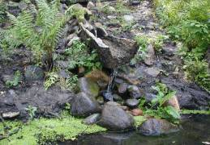
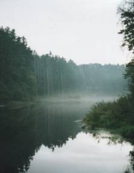
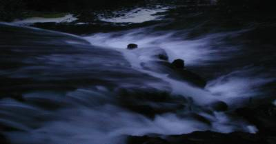
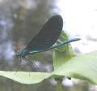
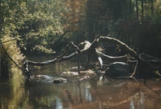
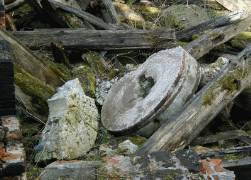
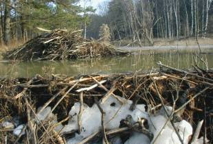
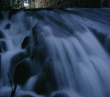
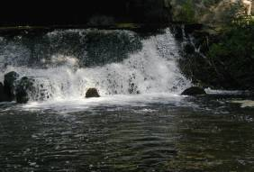

Страна, где рождаются реки
То стремительные, то спокойные, то могущественные, то скромные, то простые, то загадочные реки Виштынецкой возвышенности, пробивая себе путь меж холмов, несут свои воды к морю. Здесь, в укромных уголках леса начинается их жизнь. Здесь из тысячи родников, порой невидимыми ручейками, сочится вода, пробиваясь через камни и песок.
Вода, пришедшая некогда дождём с неба, породнившаяся с землёй, вновь устремляется в своём течении, даруя жизнь мириадам существ. Течение это не знает отдыха.
И падающая вода на мельничное колесо наполняет воздух мерным шумом, не прекращающимся ни днём, ни ночью. И не уставая крутится жернов, превращая зерно в муку, из которой крестьянка испечёт душистый хлеб.
Преодолевая преграды, журчит вода, призывая бобра взяться за работу. И вот уже готова плотина. А ил, который накопится на дне запруды, через некоторое время станет плодородной землёй, на которой поднимется могучий лес.
И звериной тропой подойдёт к реке человек, чтобы погрузиться в удивительный хрустально-зеркальный мир, наполненный жизнью. И его, как своего друга, река напоит и накормит, подарит спокойствие и научит радости в своём нехитром течении.









Фото: А. Соколов — фотокредит исходной страницы.